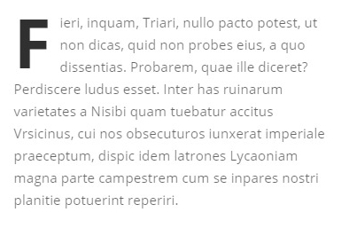
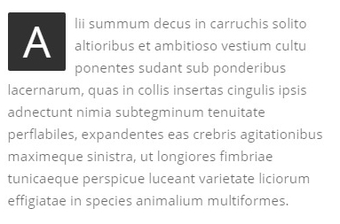
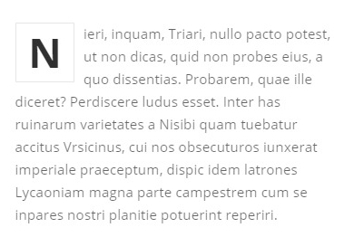
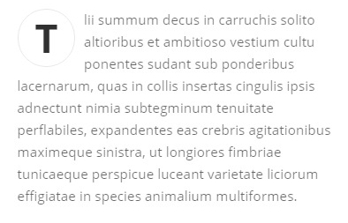

Dropcaps are big first letter at the beginning of a text to give some cool design to your story. Choose between rounded or circle style, with background or a border.
Basic dropcap have no background.

<span class="dropcap">F</span>
To add a background, add dropcap-bg class to dropcap. Then, add color you want using data-bg-color attribute:

<span class="dropcap dropcap-bg" data-bg-color="#313131" data-color="#fff">A</span>
You can change background color by using bg-primary class too, or by adding theme colors class. See theme colors classes.
To add a border, just add dropcap-line to your dropcap.

<span class="dropcap dropcap-line">N</span>
Add dropcap-circle class to your dropcap

<span class="dropcap dropcap-circle">T</span>